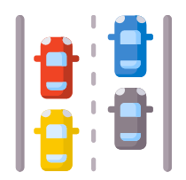

● La signalisation verticale
● La signalisation horizontale
Ligne centrale continue : il est interdit de franchir ou même de chevaucher une ligne continue pour
effectuer un dépassement. Il existe une exception pour dépasser un cycliste :
le chevauchement de la ligne blanche est autorisé.
Ligne centrale discontinue : le dépassement est autorisé.
Ligne centrale continue d’un côté et discontinue de l’autre : les véhicules roulant sur la voie du côté
de la ligne discontinue ont le droit de dépasser, tandis que les véhicules roulant sur la voie du côté
de la ligne continue n’ont pas le droit de dépasser.
Ligne de dissuasion : il s’agit d’une ligne discontinue où les traits blancs sont très rapprochés
. Le dépassement est interdit sauf pour dépasser un véhicule dont la vitesse est très faible.
Cependant, sur une voie rapide ou une autoroute, le dépassement reste autorisé, quelle que soit
la vitesse du véhicule que l’on dépasse.
Flèches de rabattement : les flèches de rabattement
indiquent que la ligne discontinue va se terminer pour laisser place à une ligne continue.
Ces flèches indiquent qu’il n’est plus possible de dépasser un véhicule qui roule à une allure normale.
Si je suis en train de dépasser, je dois terminer mon dépassement avant la ligne continue ou, si
je n’ai pas la possibilité de terminer mon dépassement, me rabattre sans dépasser.
Quelle est la différence entre un chevauchement et un franchissement de ligne continue ?
- Le chevauchement : le véhicule empiète sur la ligne axiale
- Le franchissement : le véhicule se retrouve entièrement sur la voie opposée à son sens de
circulation
La signalisation Effectuer un dépassement
Pour prendre la décision de dépasser, plusieurs conditions doivent être réunies :
- La signalisation autorise le dépassement
- Ne pas être en train d’être dépassé soi-même
- Rouler plus vite que le véhicule que je souhaite dépasser
- Si je ne bénéficie pas d’une voie dédiée allant dans mon sens de circulation pour dépasser,
je dois voir une bonne visibilité pour m’assurer qu’aucun véhicule venant en sens opposé ne sera
gêné
- S’assurer qu’aucun obstacle qui engendrerait un écart du véhicule dépassé n’est
présent sur la route (comme un piéton marchant sur le côté de la route)
- Vérifier si un passage piéton est présent. Le cas échéant, s'assurer qu’aucun piéton ne
souhaite traverser. Il faut être très vigilant, car la voiture qui nous précède peut cacher un piéton
- Pouvoir dépasser et se rabattre sans gêner le véhicule dépassé ni les véhicules venant en face,
et sans dépasser la vitesse maximale autorisée
Attention : même si je circule sur une route prioritaire et que je suis autorisé à dépasser,
je dois être très prudent au niveau des intersections. En cas de doute ou si d’autres usagers
sont présents à l’intersection, même s’ils ne sont pas prioritaires, mieux vaut ne pas dépasser.
Dans tous les cas, il est interdit de dépasser un véhicule de service hivernal en mission.
Une fois la décision de dépasser prise, je dois effectuer les actions suivantes pour dépasser :
- Actionner le clignotant gauche. Il doit clignoter tout le temps du dépassement pour
dépasser plusieurs véhicules en une fois
- Vérifier qu’aucun véhicule ne se trouve dans mon angle mort en tournant la tête
- Déboiter pour dépasser
- Une fois que le véhicule que je dépasse apparaît dans mon rétroviseur intérieur,
actionner le clignotant droit et me rabattre
Dépasser un deux-roues
Pour dépasser un deux-roues, je dois laisser un intervalle latéral de sécurité
entre celui-ci et mon véhicule d'au moins :
- 1 mètre en agglomération
- 1,5 mètre hors agglomération
Se faire dépasser
Lorsqu’un véhicule nous dépasse :
- Il est interdit d’accélérer pour ne pas augmenter la distance de
dépassement initialement prévue par le conducteur qui dépasse
- Il faut serrer à droite pour garder un espace latéral de sécurité aussi grand que possible
- S’il fait nuit et que je roule avec les feux de route, je dois passer en feux de croisement quand
le véhicule qui me dépasse arrive à ma hauteur pour ne pas l’éblouir
- Si la chaussée est mouillée, prévoir d’activer les essuie-glaces quand le véhicule va me dépasser
pour ne pas être surpris
Dans tous les cas, il ne faut pas hésiter à freiner si le dépassement est dangereux
(par exemple, si une voiture arrive en face et qu’un risque est présent).
Les dépassements par la droite
Il est interdit de dépasser par la droite.
À savoir : les situations suivantes ne sont pas considérées comme des dépassements par la droite :
- Le véhicule qui nous précède souhaite tourner à gauche, je peux alors passer
à sa droite
- Si la circulation est en files ininterrompues (dans des embouteillages),
j’avance dans ma file même si la voie à ma gauche roule moins vite

Bon courage pour votre code !